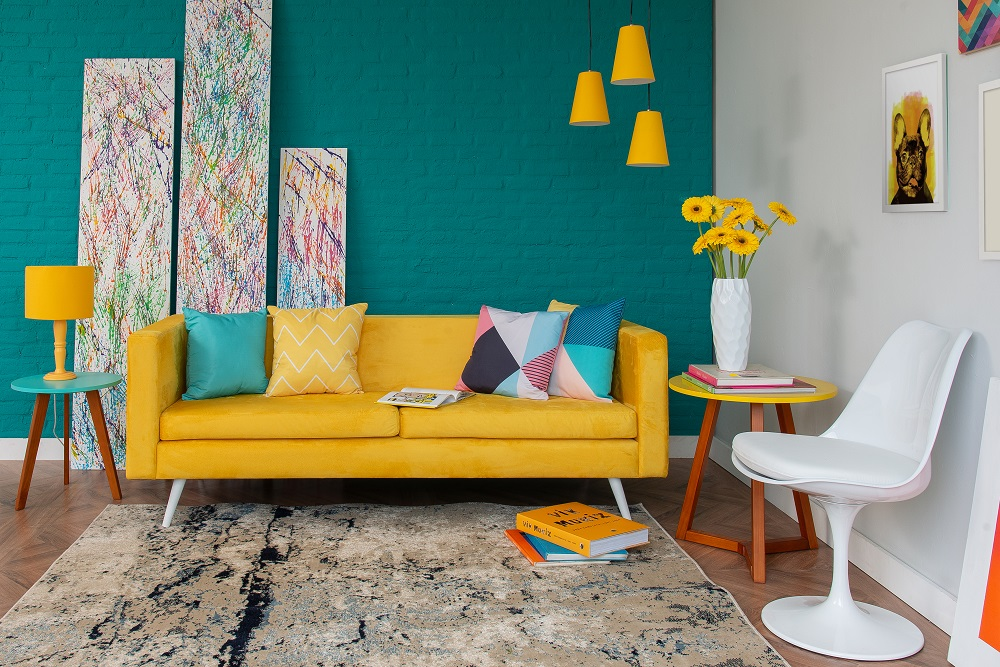
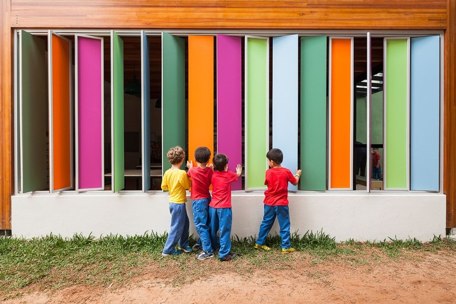
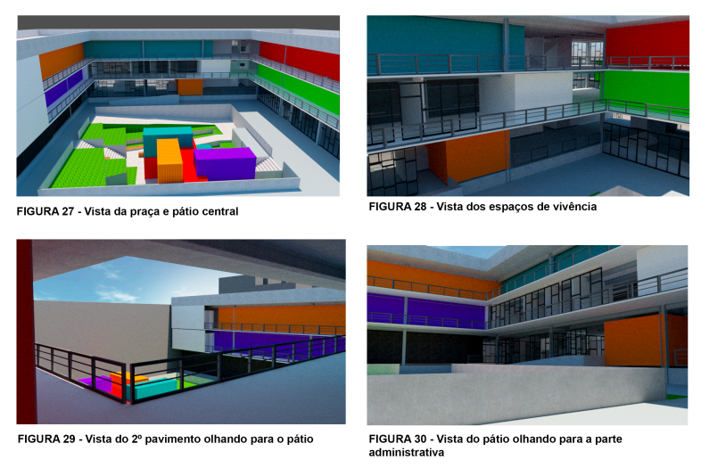
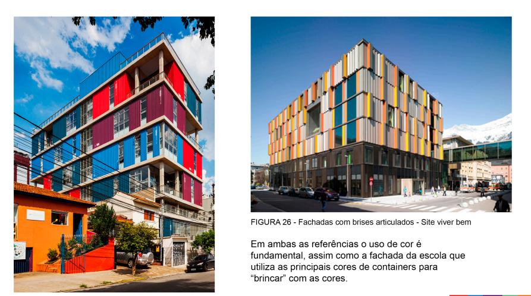
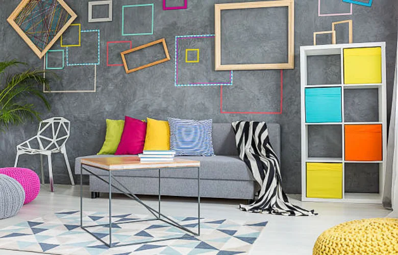

CORES
NA DECORAÇÃO
Explore o universo das cores, suas propriedades físicas, percepção visual e aplicações na arte, design e tecnologia.
Explore o universo das cores, suas propriedades físicas, percepção visual e aplicações na arte, design e tecnologia.

As cores na arquitetura e decoração são ferramentas estratégicas de design. Elas não apenas
definem a estética do espaço, mas alteram a percepção de tamanho, temperatura e influenciam
diretamente o estado emocional dos usuários.
1. A Regra 60-30-10A principal fórmula de harmonia visual divide a paleta do ambiente em três
proporções:
60% (Cor Dominante): Tons neutros (off-white, bege, cinza) aplicados em paredes e
tapetes. Serve como base.
30% (Cor Secundária): Tom intermediário presente em móveis maiores,
cortinas e painéis. Oferece contraste.
10% (Cor de Destaque): Tons vibrantes ou escuros em
almofadas, quadros ou objetos decorativos para atrair o olhar.
O azul é uma das cores mais usadas em quartos porque transmite sensação de calma, relaxamento e tranquilidade, ajudando no descanso.
Assim como branco, bege e tons pastel, fazem os ambientes parecerem maiores e mais iluminados.
Tons quentes, como vermelho, laranja e amarelo, podem estimular energia, conversa e apetite, sendo muito usados em cozinhas e salas de jantar.
O verde é associado à natureza e ao equilíbrio, por isso é bastante utilizado para criar ambientes aconchegantes e relaxantes.
Ambientes com muitas cores escuras podem parecer menores e mais fechados, mas também transmitem sofisticação e elegância.
A iluminação altera a percepção das cores: uma mesma tinta pode parecer diferente durante o dia e à noite dependendo da luz do ambiente.

Prticurlamente, desde do meu projeto individual na faculdade de Arquitetura eu sempre gostei de
utilizar cores.
Elas sempre representaram algo na minha vida, apezar de não saber na época que a "Arte" era o meio
que encontrei para
então colocar meus sentimentos e emoções de fato no papael. A imagem a seguir mostra o projeto da
Escola Técnica que fiz.
As imagens seguem como referencia do primeiro semestre. Que foi inspirado nos edificios da vila
Madalena localizados em São Paulo.


Decorando a Casa dos Sonhos
Objetivo:
Estimular a criatividade e a percepção sobre o uso das cores e elementos na decoração de ambientes
de uma casa.
Materiais:
Folha de papel ou cartolina,
Lápis, lápis de cor, canetinhas ou tinta,
Tesoura e cola (opcional),
Revistas para recorte (opcional),
Desenvolvimento da atividade:
Desenhe a planta de uma casa simples ou use modelos prontos (pode conter sala, quarto, cozinha e
banheiro).
Escolha as cores para cada ambiente da casa, pensando no que cada espaço precisa transmitir.
Exemplo: quarto com cores calmas, sala com cores aconchegantes, cozinha com cores estimulantes.
